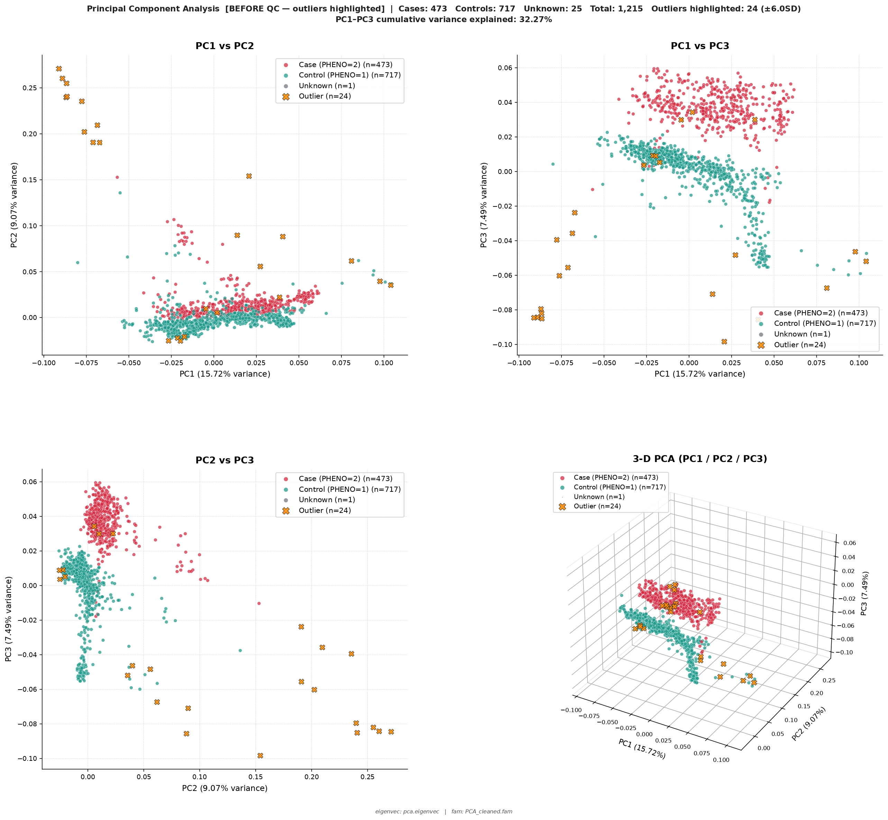

Featured Articles
Research Spotlight

Population genomics analysis performed using Principal Component Analysis (PCA) to investigate genetic structure, case-control clustering, and identify sample outliers prior to downstream association analyses. This work reflects my research interests in human genetics, bioinformatics, and precision medicine.